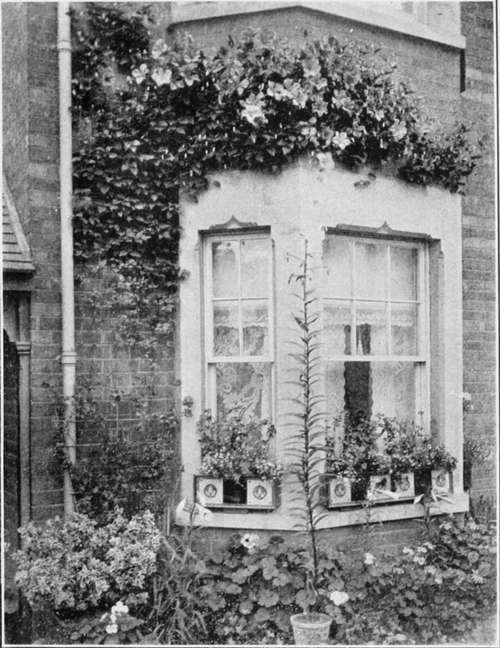
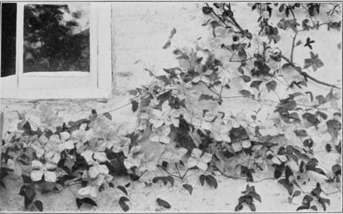

Chapter X. Window Gardens And Conservatories
Description
This section is from the book "Town Gardening", by Mary Hampden. Also available from Amazon: Town Gardening.
Chapter X. Window Gardens And Conservatories
How to Ventilate. About Gas and Temperature. Balcony Glasshouses for Alpines. Bulb Potting. Plants for Rooms. Flower-tables in Sun and Shade.
AWINDOW garden may be in a miniature glasshouse, a sort of Wardian case, or merely a collection of plants on a table, or on wire stands, or in jardinieres, inside the room. But it means, to the scientific gardener, in any case, a collection of plants grown without artificial heat.
Now a room that is constantly well ventilated makes quite a healthy plant-house, near its glass, but a room in which only chinks of ventilation are allowed, and the windows are fastened tight up every night, is not a happy home for vegetation of any sort.
Draughts do a lot of mischief when on a level with the plants, whereas draughts above them act but as valuable ventilation.
Gas is, of course, very harmful to plants, yet constant sponging and spraying will mitigate its evil, provided the air is purified by sufficient through ventilation, which means letting enough 75 wind blow through the room to entirely change the air ; during which process plants should be placed elsewhere or have light muslin thrown over them.
The temperature of rooms will be found exceedingly different, apart from the changes of temperature wrought by our English climate, and the differences are also great according to the districts and environments. A south-facing window on a Hampstead hill is baking hot at times ; one in a city square would be little more than basking hot, the sun fierceness reaching it tempered by haze ; yet the Hampstead room will contrive to be terribly cold, south though it is, on a bitter night or day of winter, whereas the room in the city square will have many more degrees of temperature to its credit. Exposed windows are good, in a way; and bad, in a way.
The house gardener had better buy a self-recording thermometer. All the ordinary greenhouse plants —geraniums, primulas, cinerarias, fuchsias, heliotrope—need a winter temperature of 500 to keep them going, though they will not die if there is a drop to 45 or 400 at night occasionally. Also, plants can be safeguarded, when there is danger of frost, by covering them with muslin, wrapping newspaper round the pots to stand high around them, inverting glass shades over them, keeping a small oil lamp burning between them and the window-, or having a small oil stove lit on the hearth. Of course outside window-conservatories, or fixed plant-cases on balconies or porch-tops, cannot be used for delicate plants unless slightly heated at night, and occasionally by day, from November to April or even May. If the owner wishes to manage these economically and without much trouble, he should cultivate only perennials, especially ' alpines.' There are thousands of familar favourites, from primroses to roses and chrysanthemums, that will do well if given open-air treatment when summer heat would weaken them under glass ; there are thousands of exquisite, uncommon alpines that would revel in the shelter, blossom as freely in the heart of towns as in the country, and keep up a succession of gay bloom.
Bulbs to pot for the miniature greenhouse on a verandah or outside a window, include freesias, Spanish irises, Roman and other hyacinths, ixias, sparaxis, tulips, narcissi, tigridias, tritonias, oxalises floribunda and brasiliensis, scilla sibirica, early-flowering gladioli, chionodoxas, anemone fulgens, and tuberous begonias. Bulbs should mostly be potted about their own depth deep, but the soil above their tips must not be pressed as hard as the soil against their sides, but left loose, or as it is called, friable, that they may be able to pierce easily through it. {See chapters on Daily Routine, and Seasonable Work).
As a rule, pot plants for inside rooms are bought regardless of their suitability. A double petunia may look charming in a shop, but gassy air will turn it black ; a cactus is quaint, but dies unless there is plenty of sunshine ; primulas usually rot off at the collar if there is not sun enough, and are burnt to death if there is too much. Primula obconicas are a fairly safe choice, and a capital investment, because they can be divided as they overcrowd one another, several pot specimens being made out of the first; but handling the roots, probably also the stems, without gloves on, will undoubtedly give a skin rash to many persons. I can vouch from experience that one can become so accustomed to the influence as to suffer no results, as it is possible to become used to mosquito and even bee stings, yet I think it best to give the warning. In one case known to me a lady wore gloves when dividing her primula obconicas, but happened to rub her eyelids with her fingers, and had a bad rash, or sort of eczema, upon the former in consequence.
The Fairy Primrose (Primula malacoides) is very dainty, and, I believe, innocuous. Single fuchsias are so graceful that it is surprising how seldom they are chosen instead of the doubles. Show pelargoniums are as easy to manage as the zonal pelargoniums we call geraniums, if they are often washed to keep away green-fly. Clivias and amaryllis are suitable if there are facilities for keeping them during winter. Yellow genistas, deutzias and spiraeas can be planted out in the garden, if 4there is one,|or sunk in their pots, in cinders, mulched by cinders and some cocoa-nut fibre in October's end, and lifted and repotted in March. Of course it is a convenient plan to hand such plants as these to a florist to be repotted.
Chrysanthemums in pots must be in the air until they are fully set with buds, preferably till the buds show colour: all but the latest kinds, which should be brought in, in any state, at the end of October. Roses will bloom in town windows if they can be kept out of doors from May to blooming time, stood out after their first blooming until the autumnal crop of buds is well forward, then kept in cold frames during winter. They really need frequent syringing, which is a difficult matter indoors, though dipping the branches and sponging bigger leaves and the stems will suffice. Marguerites only last for a time ; cinerarias, especially of the Star type (Cineraria stellata) will thrive in city air, indeed sootiness seems to keep off the ' fly ' that is so ruinous to greenhouse specimens ; they must have warm sites, of course.
A Tasteful Display.
Border carnations, perpetual carnations, and annual marguerite carnations, can all be recommended. Malmaison, and other winter and earliest spring blooming kinds, often succeed enough in rooms to delight the possessors, and can be perfectly grown in little balcony greenhouses if given plenty of top air.
The flower-table in the sunny window may be a real joy; the best kind has a three- or four-inch-deep zinc or tin tray on the top, but a few bits of wood nailed round an ordinary kitchen table, to make the top like a tray, with sides four or more inches high, and a sheet of white mottled or green American cloth or linoleum put into the tray so as to come partly up those sides, will prove quite convenient.
The following are a few plants to grow in pots ; suggestions for others must be gleaned from other pages of this book :— lied along Front: Geraniums, Dwahf Roses and Liuiws in pots At left: Eioml'ms in box, Ivy (Ikuami'ms behind Window Boxes: Iw Geraniums, Double Nasturtiums and Lobelia Overhanging Windows: Purple Clematis Between Windows: Liuum Henryi in pots.
Clematis.
Plants on the flower-table should be arranged so that the foliage and lesser subjects hide the pots of the larger, as in making plant groups for balconies, porches, etc. The zealous gardener will never tire of experimenting to discover beautiful flowers that he may cultivate with only a window for glasshouse. What can a few failures matter, when the triumphs will create such delight ?
Shady windows can have plant-tables devoted to ferns, Solomon's seal, the native primrose, dainty variegated ivies, spiraeas, London pride, meadow-saffrons, calceolarias, periwinkles, and many small evergreen shrubs, with German irises, in all their pale or richly-hued varieties, in eight- and ten-inch tubs. All the plants should be stood out in sunshine occasionally, when it is not too strong ; if this is done—say once a fortnight for three days at a time, or once a week if the plants have to be housed each night—fuchsias, calceolarias, and many more favourites can be added. The colours of the window-table flowers must be carefully chosen to harmonize, or contrast well, with the window-box plants.
Continue to:
- prev: Chapter IX. Preparing For Autumn Beauty
- Table of Contents
- next: Window Gardens And Conservatories. Continued